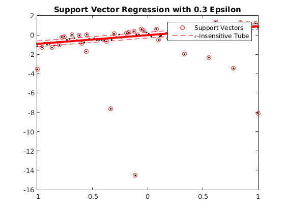
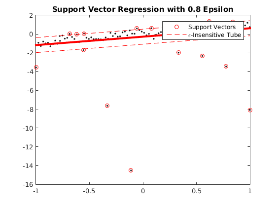

Contents
Description of demo_regression_SVR.m
Demonstrates Support Vector Regression with different epsilon-insensitive loss values
clear all close all generateData_spreadOut
usage of SVR regression with 0.3 epsilon
options_svr1 = []; options_svr1.addBias = 1; options_svr1.epsilon = 0.3; options_svr1.method = 'sm'; model_svr1 = ml_regression_SVR(Xtrain, ytrain, options_svr1); yhat_svr1 = model_svr1.predict(model_svr1, Xtest); testError_svr1 = mean(abs(yhat_svr1 - ytest)); fprintf('Averaged absolute test error with %s is: %.3f\n', model_svr1.name, testError_svr1);
Averaged absolute test error with Support Vector Regression with 0.3 Epsilon is: 0.049
usage of SVR regression with 0.8 epsilon
options_svr2 = []; options_svr2.addBias = 1; options_svr2.epsilon = 0.8; options_svr2.method = 'sm'; options_svr2.lambdaL2 = 0; model_svr2 = ml_regression_SVR(Xtrain, ytrain, options_svr2); yhat_svr2 = model_svr2.predict(model_svr2, Xtest); testError_svr2 = mean(abs(yhat_svr2 - ytest)); fprintf('Averaged absolute test error with %s is: %.3f\n', model_svr2.name, testError_svr2);
Averaged absolute test error with Support Vector Regression with 0.8 Epsilon is: 0.279
plotRegression1D(Xtrain, ytrain, model_svr1); hold on; svs = plot(Xtrain(model_svr1.supportVector),ytrain(model_svr1.supportVector),'o','color','r'); eps1 = plot(Xtest, yhat_svr1 + model_svr1.epsilon, 'r--'); eps2 = plot(Xtest, yhat_svr1 - model_svr1.epsilon, 'r--'); legend([svs,eps1],{'Support Vectors', '\epsilon-Insensitive Tube'}); title(model_svr1.name) plotRegression1D(Xtrain, ytrain, model_svr2); hold on; svs2 = plot(Xtrain(model_svr2.supportVector),ytrain(model_svr2.supportVector),'o','color','r'); eps3 = plot(Xtest, yhat_svr2 + model_svr2.epsilon, 'r--'); plot(Xtest, yhat_svr2 - model_svr2.epsilon, 'r--'); legend([svs2,eps3],{'Support Vectors', '\epsilon-Insensitive Tube'}); title(model_svr2.name) 